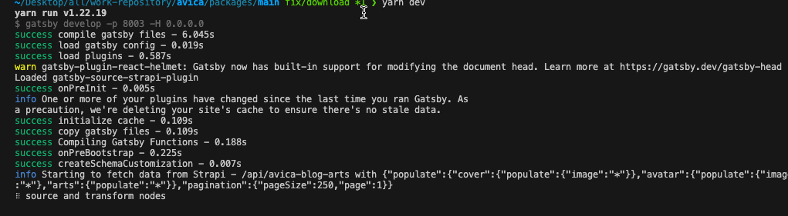
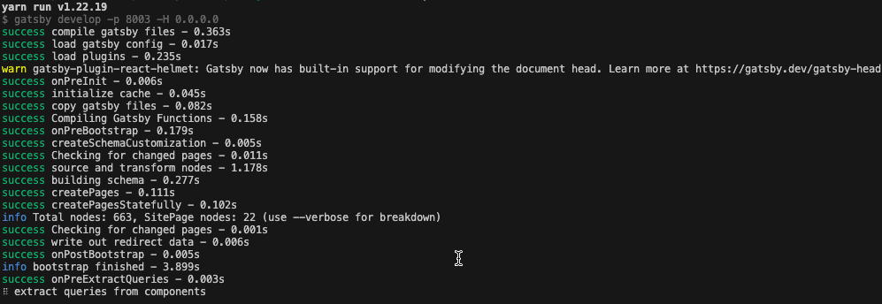

如何在gatsby项目中本地运行时不请求strapi来提示项目启动速度
- gatsby-config-ts 配置文件中注释 gatsby-source-strapi 插件配置
1 | // { |
- 在使用 strapi 的文件中注释对应从 strapi 服务获取数据的代码
1 | // const result = useStaticQuery<{ |
- m1 mac 请求 strapi 服务情况下项目启动时间大致在 4 分钟多

- m1 mac 不请求 strapi 服务情况下项目启动时间大致在 20s 左右

本博客所有文章除特别声明外，均采用 CC BY-NC-SA 4.0 许可协议。转载请注明来自 有个网站！